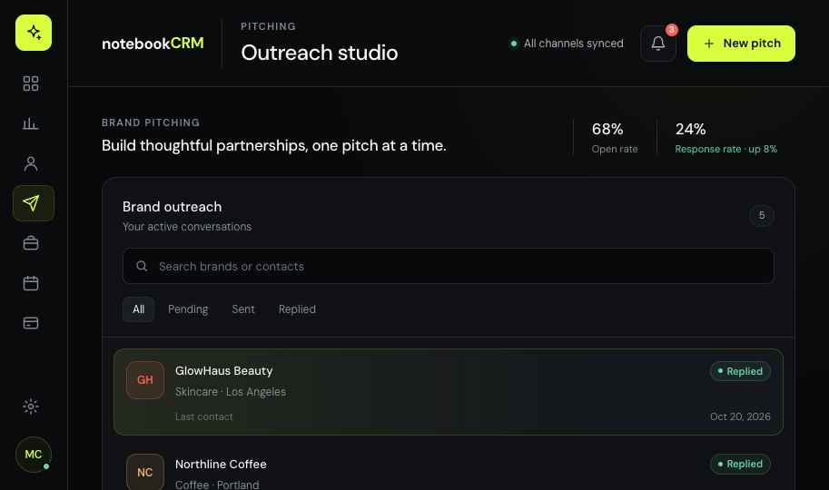
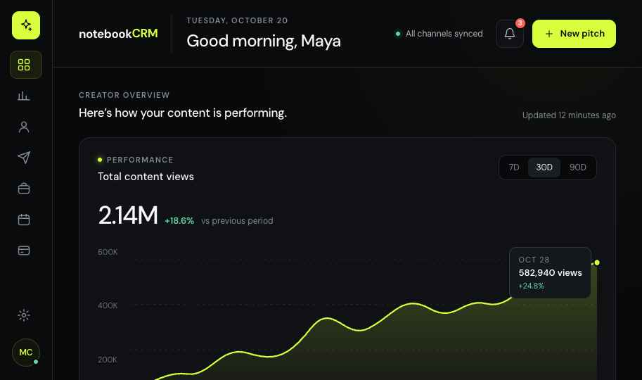
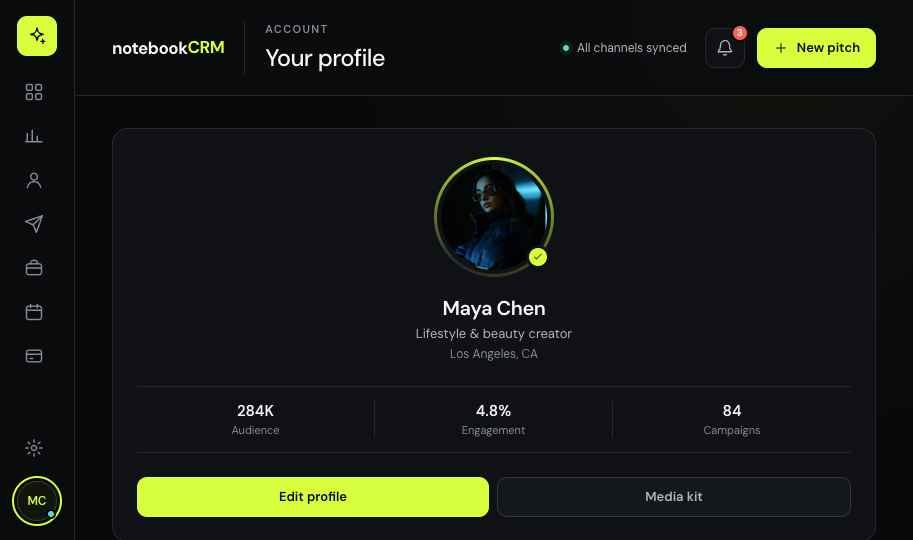
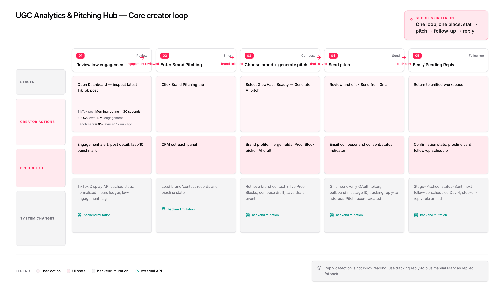
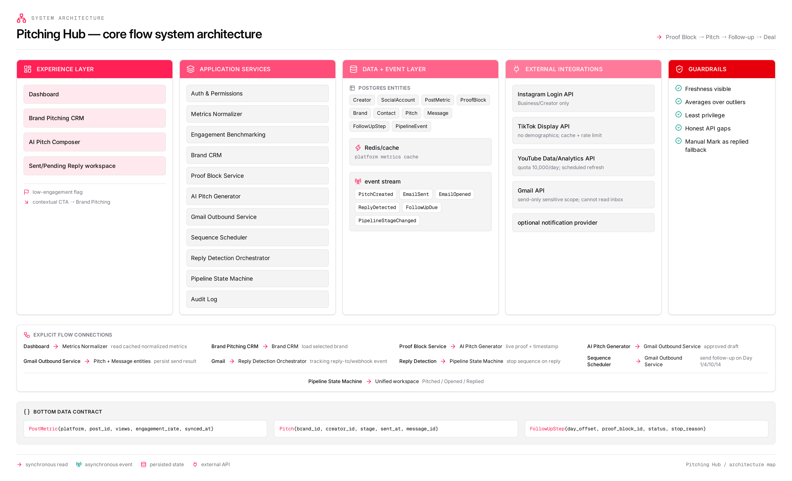
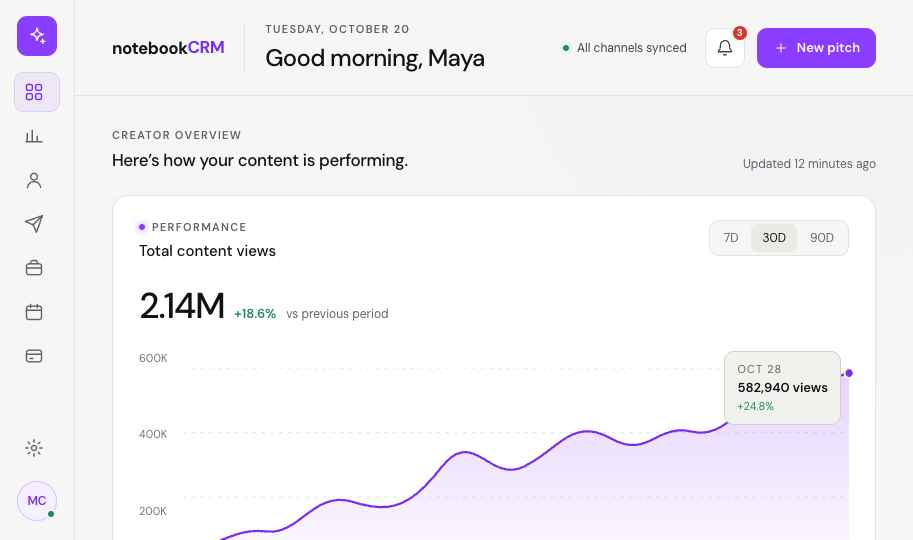

Stats are rebuilt by hand for every brand
“Right now I'm just screenshotting my Insights and it looks kind of messy.”
05 · Case study
Designing one workspace where independent creators prove their numbers, pitch brands and get paid.
Interactive prototype
Overview, Pitching and Profile, built as a working prototype. It opens in a new tab and works best on a laptop.
Open the prototype ↗
01
Independent creators run a small business with one workflow: track metrics, find a brand, pitch, follow up, quote a rate and send an invoice. Today that workflow is spread across Linktree, a spreadsheet, Gmail threads, a Notion deal tracker and a separate media kit.
notebookCRM connects those steps in one place. The product is built around a single loop. My research found no competitor that covers this loop from the creator's side.

02
The issue creators describe is not a lack of features. It is the manual work of moving information between tools that don't talk to each other.
“The biggest issue wasn't lack of features it was fragmentation.”
r/influencermarketing
Three failures came up repeatedly:
“Right now I'm just screenshotting my Insights and it looks kind of messy.”
“…it is really a struggle to keep the info up to date.” Canva user
In one audit, 46 of 50 creator pitch emails had no follow-up plan.
03
Brands are projected to spend $32.6B on creators in 2026, and 45.5% of influencer spend is expected to go to micro and nano creators. At the same time, 48.7% of US creators earn under $10,000 a year. The product has to feel and be priced like prosumer software, not an enterprise platform.
04
I defined three personas from forum research. The first is the primary user; the other two shaped the pipeline and deal features.
Primary
20K to 150K followers on two or three platforms, two to eight brand deals a month, no manager. Wants to look professional to brands without losing a day to admin. Assembles stats by hand whenever a brand asks, and finds that numbers from different platform dashboards don't match.
“…a tool, where I would enter my Social Media accounts… and it spits out a one pager with all my numbers, nicely layout and always up to date.”
Sells content as a service and needs no audience. Sends cold email at volume, often with a virtual assistant, and stitches together outreach tools, contact-finders and a spreadsheet. Measures outreach like a sales pipeline: deliverability, reply rate, positive replies, calls booked and close rate.
“finding the right contacts is honestly the hardest part.”
YouTube-first, with occasional deals. Moved from Google Sheets to Notion and linked deals, deliverables and invoices by hand so nothing would be missed.
“The biggest upgrade for me was linking deals → deliverables → invoices so nothing slips.”
05
The market splits into two halves that don't meet. Creator-side tools present the creator to brands. Brand-side tools help brands manage creators. Neither supports the creator's own business workflow.
| Capability | Linktree | MediaKits.com | Later Influence | notebookCRM |
|---|---|---|---|---|
| Built for | Creators, small businesses | Creators | Brands, agencies | Creators |
| Media kit | No | Yes | No | Auto-generated |
| Cross-platform metrics | Link clicks only | Yes | Brand-facing | Normalized |
| Pitch sending and tracking | No | No | Brand-side only | Yes |
| Automatic follow-ups | No | No | No | Yes |
| Deal pipeline | No | No | Brand-side | Creator-side |
| Invoicing | Product sales only | Unverified | Brand-side | Stripe |
| Price | Free to $35/mo | Unverified | ~$28,500/yr (estimate) | Prosumer |
Each competitor pointed to a design opportunity:
06
07
The product rests on three pillars, each matching one part of the creator's workflow.
Pillar 1
Creators connect Instagram, TikTok and YouTube once and see normalized views, engagement rate, saves, shares and follower change. Performance is shown as averages and medians over the last 10, 30 and 90 posts. Key numbers become Proof Blocks: small live stat cards that can be dropped into a pitch, media kit or rate card so they never go out of date.

Pillar 2
Creators write and send pitches from their own Gmail and track opens, clicks and replies. Follow-up sequences run on day 1, 4, 10 and 14, each attaching a different Proof Block, and stop when the brand replies. Each brand moves through Pitched, Opened, Replied, Negotiating and Won or Lost. A public profile link lets brands send structured collaboration requests that land in the same pipeline.
Pillar 3
The rate card lists “starting at” prices per deliverable, with bundles and usage rights quoted per campaign. Brands prefer this middle ground: no pricing reads as open to heavy negotiation, while a rigid price sheet locks the creator in. Suggested rates draw on the creator's engagement rate and niche benchmarks. Each won deal links to an invoice and a Stripe payout.
08
Before laying out a single screen, I mapped the core creator loop and the system behind it as node diagrams in Flowstep. Every screen in the prototype traces back to a node here.
The maps use the product's working name, Pitching Hub. The first follows one creator through five stages, from spotting a low-engagement post to a sent pitch, and pairs each creator action with the UI it needs and the system change it triggers. The second breaks that loop into layers: the screens, the services behind them, the data and events they write, the platform APIs they depend on, and the guardrails from the design principles.


09
Platform APIs set firm limits on what the product can show. I reviewed each one and designed the interface to be honest about the gaps.
ConstraintOnly Business or Creator accounts can connect. The “impressions” metric is deprecated.
Design responseCheck account type at connection, with a guide to upgrade. Label the metric “Views.”
ConstraintNo audience demographics. App approval can take weeks.
Design responseShow “Not available from TikTok” instead of a blank. Cache data and show sync times.
ConstraintDaily quota of 10,000 units.
Design responseRefresh on a schedule rather than live, with a “last synced” time.
ConstraintSending is a sensitive scope; reading mail requires a security assessment.
Design responseRequest send-only access and explain why. Detect replies through a tracking reply-to address, with a manual “Mark as replied” option.
ConstraintIdentity checks (KYC) are required for payouts.
Design responseHand off to Stripe's own onboarding and show payout status in the app.
ConstraintNo official source; scraped data is about 70 to 80% accurate.
Design responseStart with manual entry and CSV import. Contact discovery comes later.
10
The interface uses DM Sans throughout, with a lime accent in dark mode and violet in light mode. Navigation is a single sidebar, and an animated indicator moves between screens so the analytics and pitching areas read as one product.

11
12
The Overview, Pitching and Profile screens are designed. The media kit, pipeline board, rate card editor and invoicing screens are next. Before committing to the roadmap, I plan to:
Research sources include public pricing pages, G2, Capterra and Trustpilot reviews, creator communities on Reddit, eMarketer and other 2026 creator economy reports, and official Instagram, TikTok, YouTube, Gmail and Stripe developer documentation. Names and figures in the screens are example data.